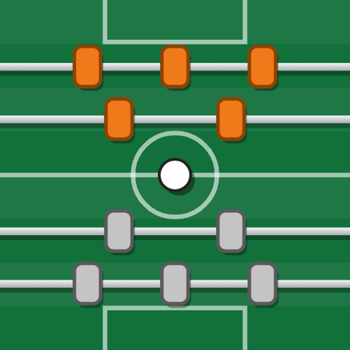

Arbitre Baby
Chrono et score pour arbitrer un match de baby-foot
Ce que l'appli ajoute
- Volume + lance le chrono 10 s, volume − le chrono 15 s.
- Une vibration forte à la fin du temps, même en mode silencieux.
- L'écran reste allumé pendant le match.
- Elle fonctionne sans réseau et se met à jour toute seule.
Installer
- Touche le bouton vert, puis ouvre le fichier téléchargé.
- Si Android bloque les « applis inconnues » : Paramètres, active Autoriser depuis cette source, puis reviens.
- Touche Installer.
- Si Play Protect affiche un avertissement : Plus de détails puis Installer quand même (l'appli ne vient pas du Play Store).
Déjà installée ? La nouvelle version s'installe par-dessus, tes scores sont gardés.
Sur iPhone
Pas d'appli : ouvre le site dans Safari, touche Partager puis Sur l'écran d'accueil. Les boutons de volume ne fonctionnent pas sur iPhone.